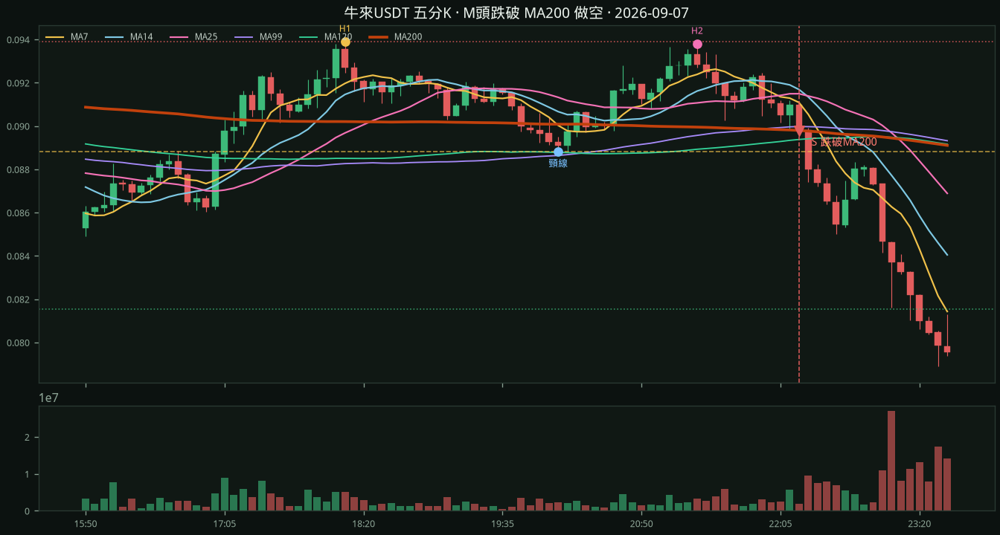
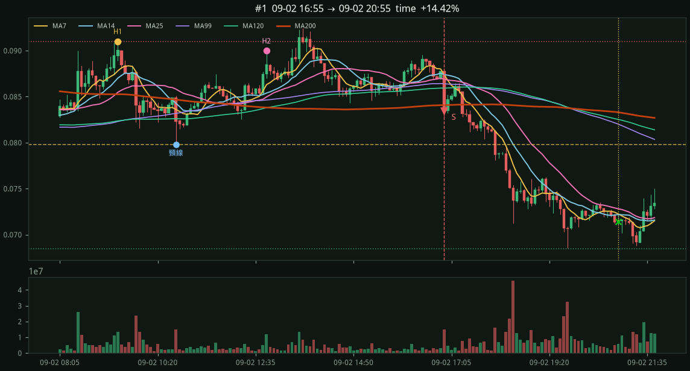
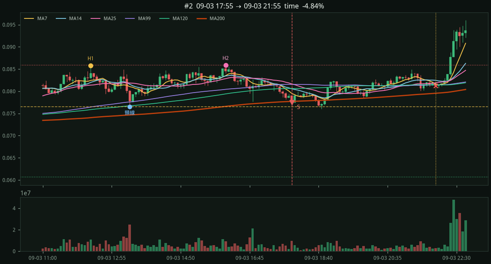
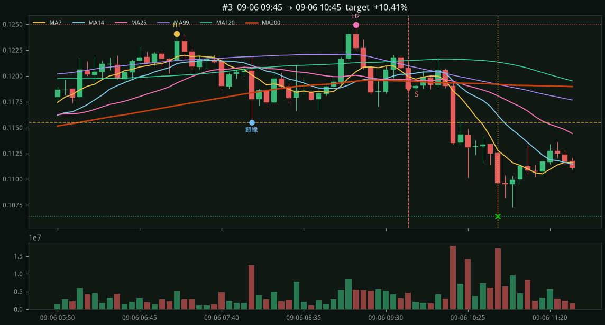
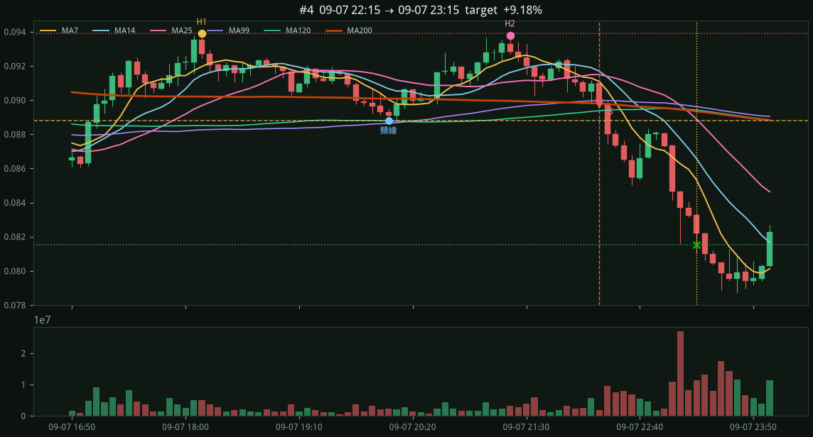

截圖這段2026-09-07 22:15 跌破 MA200
左峰 H1、右峰 H2 在 MA200 上方結成 M 頭，收盤跌破紅色 MA200 進場做空（S）。停損在雙頂高點，目標 2R。

幣安 U 本位永續 · 近 7 天 · 2026-08-30 19:30 → 2026-09-08 00:00 CST · 2359 根
M 頭：兩波段高點價差 ≤ 2%、間隔 1～6 小時、中間低點深度 ≥ 2%，且兩峰收盤都在 MA200 上方。
第二峰確認後 48 根內，收盤由上跌破 MA200 進場做空。
停損在雙頂高點、目標 2R、或 48 根時間停。加總％是各筆報酬相加，不是複利。
漏斗：轉折高 228 → 配對 1304 → M形 84
→ 峰在均線上 24 → 跌破 MA200 14 → 訊號 5
出場：2R 2 · 停損 0 · 時間 2 · 未平 0
左峰 H1、右峰 H2 在 MA200 上方結成 M 頭，收盤跌破紅色 MA200 進場做空（S）。停損在雙頂高點，目標 2R。

entry 0.08348 MA200 0.08407 stop 0.09100 （M頭高 −0.00752） target 0.06844 （2R） exit 0.07144 time +14.42% H1 09-02 09:25 0.09100 H2 09-02 12:50 0.08997 頸線 09-02 10:45 0.07982

entry 0.07747 MA200 0.07771 stop 0.08589 （M頭高 −0.00842） target 0.06063 （2R） exit 0.08122 time -4.84% H1 09-03 12:20 0.08580 H2 09-03 16:05 0.08589 頸線 09-03 13:25 0.07653

entry 0.11876 MA200 0.11949 stop 0.12494 （M頭高 −0.00618） target 0.10640 （2R） exit 0.10640 target +10.41% H1 09-06 07:10 0.12409 H2 09-06 09:10 0.12494 頸線 09-06 08:00 0.11551

entry 0.08978 MA200 0.08980 stop 0.09390 （M頭高 −0.00412） target 0.08154 （2R） exit 0.08154 target +9.18% H1 09-07 18:10 0.09390 H2 09-07 21:20 0.09380 頸線 09-07 20:05 0.08881
